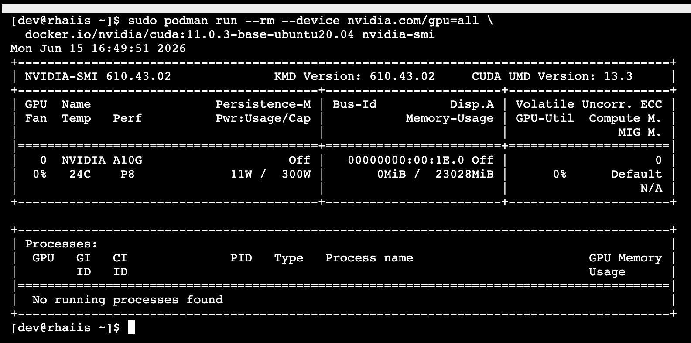

Lab: Model Serving with Red Hat AI Inference Server
Lab Overview and Objectives
This lab walks you through the first steps of deploying an LLM, verifying its operation, and performing basic performance tuning based on your available hardware resources.
You begin with a preconfigured Red Hat Enterprise Linux (RHEL) environment that already has the necessary NVIDIA drivers installed. Your focus should be entirely on the deployment and management of the RHAII container.
Stop the Existing AI Model.
Our first task is to get our own baseline model up and running.
-
If you have not stopped the running lab model to free up the GPU. In the top terminal, run:
sudo systemctl stop rhaiis.service
To make sure everything is working correctly, let’s run a quick test. This command will start a temporary container and run nvidia-smi inside of it. If it works, you’ll see details about your GPU. Keep this handy; it’s a great way to test container access to GPUs across environments.
Run this command in Terminal 1:
sudo podman run --rm --device nvidia.com/gpu=all \
docker.io/nvidia/cuda:11.0.3-base-ubuntu20.04 nvidia-smi
You should see an output similar to the one you’d see if you ran nvidia-smi on the host, showing your GPU model, memory usage, and driver version.
Deploy Your First Model
1. Create a Cache Directory
Create a local directory to cache the downloaded model. This saves time on subsequent launches.
mkdir -p $HOME/rhaiis-cache2. Run the RHAII Container
This is the core of our lab. We’re going to launch the RHAII container image and tell it to serve the ibm-granite/granite-3.3-2b-instruct model.
This command might look a bit complex, but let’s break down the important parts:
-
--device nvidia.com/gpu=all: This gives the container access to all available GPUs. -
--security-opt=label=disable: This is important for SELinux systems to allow the container to access local files. -
--shm-size=4GB -p 8000:8000: This allocates shared memory and maps the container’s port 8000 to the host’s port 8000, so we can access the API. -
--env "HUGGING_FACE_HUB_TOKEN=$HFTOKEN": We’re passing our Hugging Face token into the container. -
-v $HOME/rhaiis-cache:/opt/app-root/src/.cache: This mounts our local cache directory, so the model only needs to be downloaded once. -
registry.redhat.io/rhaii/vllm-cuda-rhel9:3.4.1-1780356914: This is the specific RHAII container image we’re using. -
--model ibm-granite/granite-3.3-2b-instruct: This tells the server which model to download and serve.
In Terminal 1, copy and paste the following command and press Enter. This will take some time as the model is downloaded and loaded onto the GPU.
podman run --rm -it --name rhaii-server \
--device nvidia.com/gpu=all \
--security-opt=label=disable \
--userns=keep-id \ (1)
--shm-size=4GB -p 8000:8000 \
--env "HUGGING_FACE_HUB_TOKEN=$HF_TOKEN" \
--env "HF_HUB_OFFLINE=0" \
--env=VLLM_NO_USAGE_STATS=1 \
-v $HOME/rhaiis-cache:/opt/app-root/src/.cache:Z \
registry.redhat.io/rhaii/vllm-cuda-rhel9:3.4.1-1780356914 \
--model ibm-granite/granite-3.3-2b-instruct| 1 | This permits the podman run command to read from the /rhaiis-cache directory. |
3. Monitor GPU Memory
There are a few tools for monitoring GPU memory. Because we are using Nvidia GPUs, we’re using their tools.
The nvidia-smi command is your primary tool for monitoring the GPU. We saw this demonstrated in our quick GPU test earlier. For this part of the lab, let’s use the nvtop command.
-
In your second terminal, run
nvtopto see live updates.nvtop -
Keep an eye on the Memory-Usage box. It will show you how much of the total available VRAM is being used as the model loads its weights and initializes the KV Cache, eventually consuming most of the GPU’s memory. This initial usage represents the baseline VRAM consumption for the model with default settings.
Arcade Video Walkthrough - Pause to review a Segment.
4. Verify the Deployment
Once you see logs indicating "Starting vLLM server on http://0.0.0.0:8000", the server is ready.
-
In Terminal 2, stop the
nvtopprocess by pressing CTRL-C.-
Do not close the terminal or end the process where the RHAII container is running.
-
-
In Terminal 2, use
curlto send a test prompt to the server’s completions endpoint.curl -X POST http://localhost:8000/v1/completions \ -H "Content-Type: application/json" \ -d '{ "prompt": "What are the key benefits of using Red Hat AI Inference Server?", "model": "ibm-granite/granite-3.3-2b-instruct", "max_tokens": 150 }' | jq .choices[0].text
You should now see a standard, formatted response from the model, which confirms that the inference server is working correctly.
Feel free to change the prompt and try a few different queries to experiment with the model.
4. Monitor and Tuning VRAM Usage
Understanding and managing GPU memory is the most critical skill for serving LLMs efficiently. Now that we validated it’s working, let’s see how much VRAM our model is using and how to tune it.
Monitor GPU Memory
This time, let’s use the nvidia-smi command as your primary tool for monitoring the GPU.
-
In Terminal 2 , run
nvidia-smiin watch mode to see live updates.watch -n 1 nvidia-smi -
Observe the Memory-Usage column. It will show how much VRAM is being used out of the total available (e.g.,
21243MiB / 23028MiB). This is the baseline VRAM consumption for this model with default settings.
Press Ctrl-C to exit the nvidia smi command.
The other command available in this lab is the nvtop command. I like this command better because of the graph-style consumption metrics provided for GPU memory usage and GPU processing usage.
Tune for Maximum Context Length
The --max-model-len argument controls the maximum number of tokens (input prompt + generated output) a request can handle. A larger context length requires more VRAM. Let’s find the sweet spot for our GPU.
-
Stop the running RHAII container by pressing
Ctrl+Cin its terminal. -
Relaunch the server, this time adding the
--max-model-lenargument. Let’s start with a value of8,000.podman run --rm -it --name rhaii-server \ --device nvidia.com/gpu=all \ --security-opt=label=disable \ --userns=keep-id \ --shm-size=4GB -p 8000:8000 \ --env "HUGGING_FACE_HUB_TOKEN=$HF_TOKEN" \ --env "HF_HUB_OFFLINE=0" \ --env=VLLM_NO_USAGE_STATS=1 \ -v $HOME/rhaiis-cache:/opt/app-root/src/.cache \ registry.redhat.io/rhaii/vllm-cuda-rhel9:3.4.1-1780356914 \ --model ibm-granite/granite-3.3-2b-instruct \ --max-model-len=8000 (1)1 Limits the model’s context length to 8,000 tokens from the max ~128,000 tokens.
Once the server is running, check your nvidia-smi, nvtop watch windows. You should see a noticeable decrease in VRAM usage, but you don’t.
In reality, what happens in this case is that the inference engine does limit the model’s max context length to 8K, however, the RHAII (vLLM) engine still consumed all the available GPU memory it could based on the .90 (90%) utilization default setting.
Let’s reduce this memory setting next to see how this affects GPU memory consumption.
Fine-Tuning GPU Memory Utilization
The most direct way to control the memory vLLM reserves is with the --gpu-memory-utilization flag. It takes a value between 0.0 and 1.0. The default is 0.9, which reserves 90% of the GPU’s VRAM for this vLLM instance.
-
Stop the running container with
Ctrl+C. -
Relaunch the server, setting the utilization to 70% to leave more memory for other processes if needed.
podman run --rm -it --name rhaii-server \ --device nvidia.com/gpu=all \ --security-opt=label=disable \ --userns=keep-id \ --shm-size=4GB -p 8000:8000 \ --env "HUGGING_FACE_HUB_TOKEN=$HF_TOKEN" \ --env "HF_HUB_OFFLINE=0" \ --env=VLLM_NO_USAGE_STATS=1 \ -v $HOME/rhaiis-cache:/opt/app-root/src/.cache \ registry.redhat.io/rhaii/vllm-cuda-rhel9:3.4.1-1780356914 \ --model ibm-granite/granite-3.3-2b-instruct \ --gpu-memory-utilization 0.70 (1)1 Instructs the server to use a maximum of 70% of the available GPU memory. -
Observe the change in memory allocation in
nvidia-smi. The amount of memory reserved by the server will now be lower. This is a key parameter for running in shared environments.
Arcade Video Walkthrough - Pause to review a Segment.
5. Deploy an Alternative Model
Switching models with RHAII is simple. Let’s deploy the RedHatAI/granite-3.1-8b-instruct model.
-
Stop the current container with
Ctrl+C. -
Run the
podmancommand again, but change the value of the--modelargument.podman run --rm -it --name rhaii-server \ --device nvidia.com/gpu=all \ --security-opt=label=disable \ --userns=keep-id \ --shm-size=4GB -p 8000:8000 \ --env "HUGGING_FACE_HUB_TOKEN=$HF_TOKEN" \ --env "HF_HUB_OFFLINE=0" \ --env=VLLM_NO_USAGE_STATS=1 \ -v $HOME/rhaiis-cache:/opt/app-root/src/.cache:Z \ registry.redhat.io/rhaii/vllm-cuda-rhel9:3.4.1-1780356914 \ --model RedHatAI/granite-3.1-8b-instruct1 We’ve switched to the RedHatAI/granite-3.1-8b-instruct model. The server will download it if it’s not already in the cache. This can take a few minutes. -
Once the server is running, test it with a new
curlrequest. Remember to update the model name in your request body.curl -X POST http://localhost:8000/v1/completions \ -H "Content-Type: application/json" \ -d '{ "prompt": "What is the IBM Granite series of models?", "model": "RedHatAI/granite-3.1-8b-instruct", "max_tokens": 150 }' | jq .choices[0].text
Arcade Video Walkthrough - Pause to review a Segment.
6. Troubleshoot the Larger Model
If you deployed your lab using the suggested environment, your attempt to launch the larger Granite-8B model likely crashed during the loading phase. If you were monitoring the terminal with nvtop, you would have seen the GPU usage suddenly drop to zero.
This crash was a fully expected part of the learning process. Earlier in the course, we discussed how to calculate the required memory and context length for the Granite 8B model. Let’s revisit that sizing challenge.
Traditionally, you would need to calculate this exact number and apply it as a strict argument (--max-model-len) to successfully launch the model.
However, Red Hat AI Inference 3.4 introduces automatic context sizing to eliminate this deployment friction. This feature prevents frustrating Out-of-Memory (OOM) crashes during launch and ensures the server safely maximizes the available vRAM without requiring manual calculations and guesswork.
View the Deployment Solution
podman run --rm -it --name rhaii-server \
--device nvidia.com/gpu=all \
--security-opt=label=disable \
--userns=keep-id \
--shm-size=4GB -p 8000:8000 \
--env "HUGGING_FACE_HUB_TOKEN=$HF_TOKEN" \
--env "HF_HUB_OFFLINE=0" \
--env=VLLM_NO_USAGE_STATS=1 \
-v $HOME/rhaiis-cache:/opt/app-root/src/.cache:Z \
registry.redhat.io/rhaii/vllm-cuda-rhel9:3.4.1-1780356914 \
--model RedHatAI/granite-3.1-8b-instruct \
--max-model-len auto \
--gpu-memory-utilization 0.95By using the auto setting, the inference engine secures the largest possible context window for individual queries. Behind the scenes, PagedAttention and concurrency limits (such as --max-num-seqs) work seamlessly together to distribute memory fairly and queue excess traffic during concurrent demand spikes.
Arcade Video Walkthrough - Pause to review a Segment.
7. Lab Summary and Next Steps
Congratulations on completing the core deployment exercises!
The key takeaways from this lab experience were:
-
Gaining practical, hands-on experience deploying the Red Hat AI Inference container (version 3.4.1).
-
Learning how to calculate an AI model’s GPU requirements and size your infrastructure.
-
Deploying models, testing API functionality, and monitoring real-time resource consumption.
-
Tuning server performance based on available vRAM to prevent system crashes and optimize output.
Up Next: Now that we have the fundamentals of serving and sizing under our belt, we will transition from basic deployment to production readiness. In the next section, we will briefly explore the operational side of AI: security, observability, and the use of Modelcars.